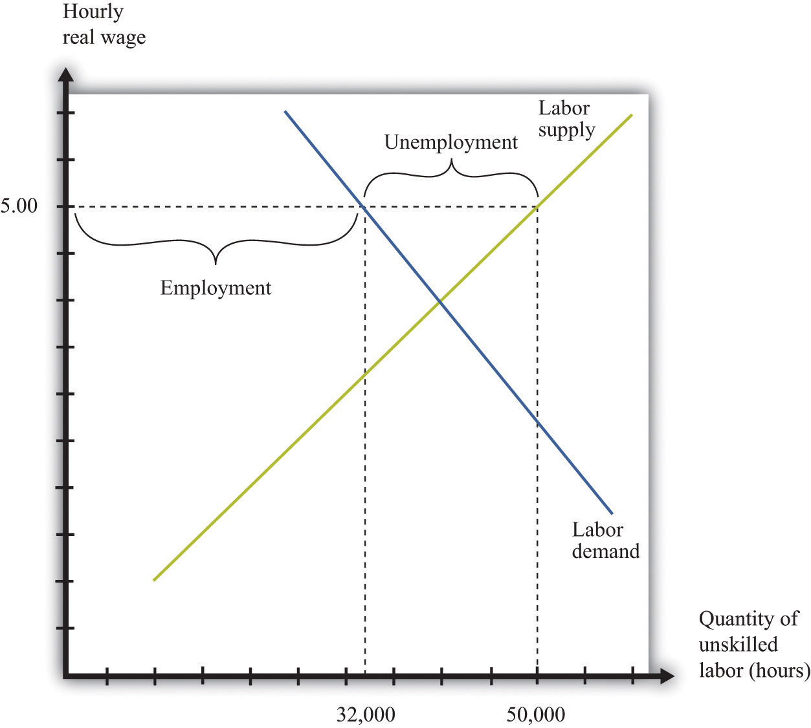
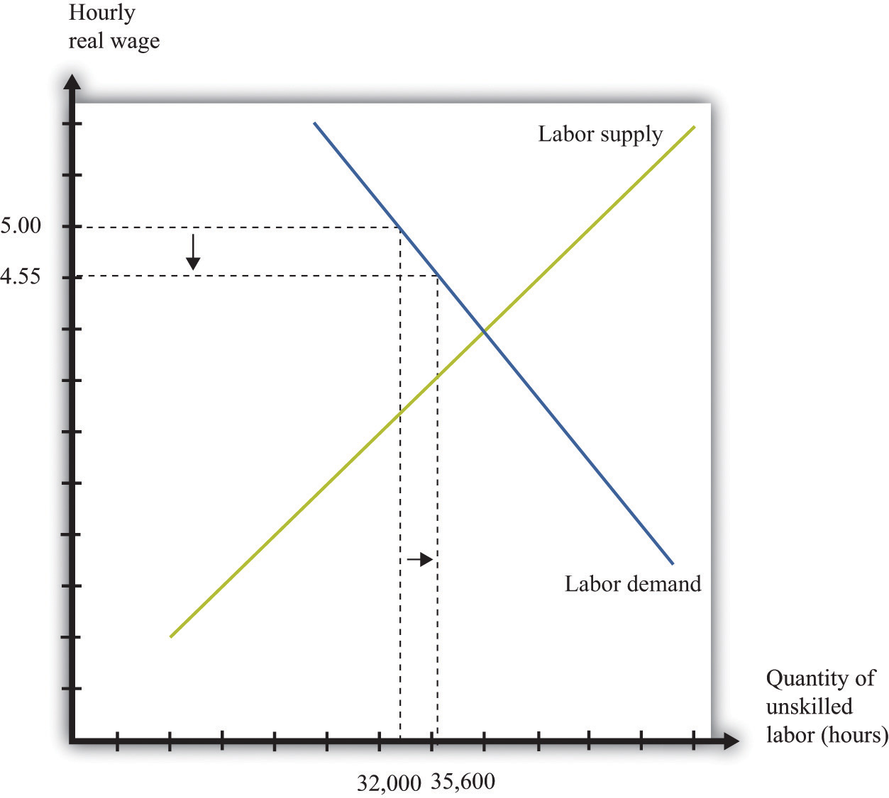
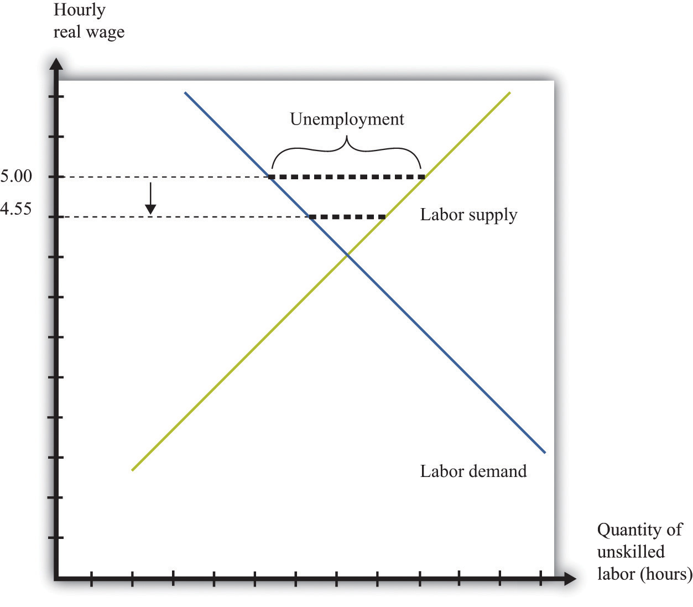
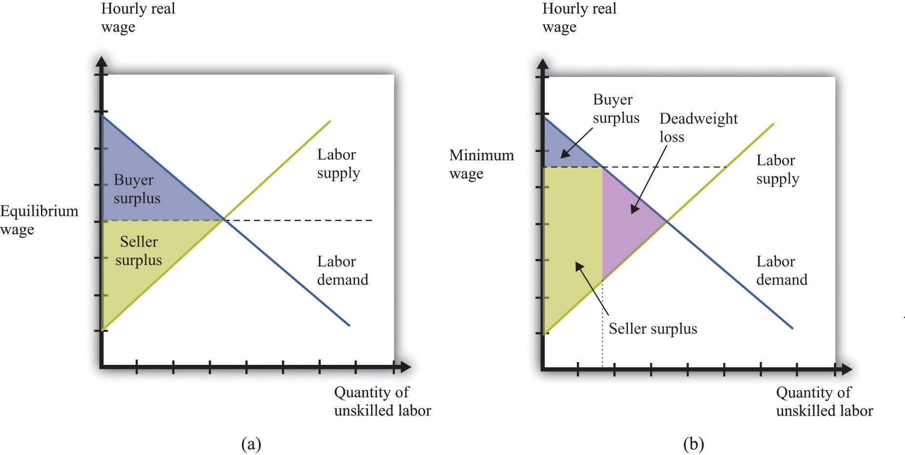

Adam Smith, the 18th-century economist who founded modern economics, had a vivid metaphor for the idea that supply would equal demand in a competitive market: he referred to an “invisible hand” guiding markets to equilibrium. Joan Robinson, a famous economist at Cambridge University in the first half of the 20th century, wrote that “the hidden hand will always do its work but it may work by strangulation.”Joan Robinson, “The Pure Theory of International Trade,” in Collected Economic Papers (Oxford: Basil Blackwell, 1966), 189. What she meant by this was there is no guarantee that the equilibrium wage in the market would in fact be a living wage.
When the government imposes a minimum wage, firms are not permitted to pay less than the amount that the government mandates. Suppose we are again in the base year, so the price level is 1. Imagine that the market equilibrium wage is $4 per hour, but the government now passes legislation stating that all firms must pay at least $5 per hour. At this wage, supply does not equal demand. Figure 11.6 "Labor Market with a Minimum Wage" illustrates what happens.
Figure 11.6 Labor Market with a Minimum Wage
With a minimum wage of $5, the supply of labor is 50,000 hours, but firms demand only 32,000 hours of labor, so the labor market is not in equilibrium.
Markets are based on voluntary trades. In Figure 11.6 "Labor Market with a Minimum Wage", we see that sellers (the workers who supply labor) would like to sell 50,000 hours of labor to the market at the set minimum wage—that is, 250 more people would like to have a 40-hour-a-week job when the wage increases from $4 to $5. But firms wish to purchase only 32,000 hours of labor—firms want to hire 200 fewer workers (8,000 fewer hours). In a market with voluntary trade, no one can force firms to hire workers. As a result, the equilibrium quantity of labor traded in the market will be determined by how much the firms wish to buy, not how much workers want to sell.
We can now answer our first motivating question of the chapter: what is the consequence of imposing a minimum wage? Two things happen when the government imposes a minimum wage:
The number of unemployed workers is 450, even though employment decreased by only 200 workers. The difference comes from the fact that the higher wage also means that more people want to work than before. In this case, the higher wage means 250 more people would like a job.
We have assumed in this discussion that everyone works for 40 hours, in which case the number of people employed must decrease by 200. Another possibility is that everyone who wants a job is able to get one, but the number of hours worked by each individual decreases. Because there are 32,000 hours of work demanded and 1,250 people who want jobs, each worker would work 25.6 hours a week. In this situation, we say that there is underemployment rather than unemployment. Yet another possibility is that, after the introduction of the minimum wage, the number of people employed stays the same as before (1,000), but those individuals are allowed to work only 32 hours per week. In this case, we have both underemployment (of the previously employed) and unemployment (of the extra workers who want a job at the higher wage). In real-life situations, there may be both unemployment and underemployment.
Although inflation made no difference to our basic analysis of the labor market, it does change our analysis of the minimum wage. Minimum wages are fixed in nominal terms and do not automatically change when there is inflation. So if the minimum wage is set at $5 and the price level increases from 1 to 1.1, the real minimum wage declines. Looking back at the definition of the real minimum wage, we find that
The effect of a reduction in the real minimum wage is shown in Figure 11.7 "A Reduction in the Real Minimum Wage". At the lower real wage, firms are willing to hire more workers. Employment increases from 32,000 hours to 35,600 hours: 90 more people can find jobs.
Figure 11.7 A Reduction in the Real Minimum Wage
A 10-percent increase in the price level leads to a reduction in the real minimum wage to $4.55 and an increase in employment from 32,000 to 35,600.
In Figure 11.7 "A Reduction in the Real Minimum Wage", the real minimum wage of $4.55 is still higher than the equilibrium wage of $4.00. To put the same point another way, the equilibrium nominal wage has increased to $4.40, but this is still below the nominal minimum wage of $5.00. However, if the price level were to increase by 25 percent or more from the base year, the minimum wage would become completely irrelevant. The minimum wage would be below the market wage. Economists say that the minimum wage would no longer be “binding” in this case.
It is exactly this process of increasing prices that lies behind Figure 11.3 "Real Minimum Wage in the United States". As the price level increases, the minimum wage becomes worth less in real terms (and has less of an effect on employment). Eventually, Congress acts to increase the minimum wage to bring it back in line with inflation—although, as Figure 11.3 "Real Minimum Wage in the United States" shows, Congress has allowed the real minimum wage to decline substantially from its high point in the late 1950s. The reduction in the real minimum wage also leads to a reduction in unemployment, as shown in Figure 11.8 "Effects on Unemployment of a Reduction in the Real Minimum Wage".
Figure 11.8 Effects on Unemployment of a Reduction in the Real Minimum Wage
The reduction in the real minimum wage to $4.55 leads to a decrease in unemployment.
Markets are a mechanism that allow individuals to take advantage of gains from trade. Whenever a buyer has a higher valuation than a seller for a good or service, they can both benefit from carrying out a trade. This is how economies create value—by finding opportunities for mutually beneficial trades.
The minimum wage interferes with this process in the unskilled labor market. It reduces employment, which is the same as saying that fewer transactions take place. Because each voluntary transaction by definition generates a surplus, anything that reduces the number of transactions causes a loss of surplus. In economists’ terminology, the minimum wage leads to a departure from efficiencyThe basis that economists use for judging the allocation of resources in an economy.. We can represent that inefficiency graphically. Figure 11.9 "Deadweight Loss from Minimum Wage" shows the effect of the minimum wage, using the ideas of buyer surplus and seller surplus.
Toolkit: Section 31.10 "Buyer Surplus and Seller Surplus" and Section 31.11 "Efficiency and Deadweight Loss"
You can review the different kinds of surplus, as well as the concepts of efficiency and deadweight loss, in the toolkit.
Figure 11.9 Deadweight Loss from Minimum Wage
With no minimum wage (a), all the possible gains from trade in the market are realized, but with a minimum wage (b), some gains from trade are lost because there are fewer transactions.
In part (a) of Figure 11.9 "Deadweight Loss from Minimum Wage", we see the market without the minimum wage. In the labor market, it is the firm who is the buyer. The total buyer surplus is the profitRevenues minus costs. that firms obtain by hiring these workers; it is the difference between the cost of hiring these workers and the revenues that they generate. Graphically, it is the area below the labor demand curve and above the market wage. The total sellersellers’ surplus#8217;s surplus is the benefit that accrues to workers from selling labor time. Sellers of labor (workers) receive surplus equal to the area below the market wage and above the supply curve.
In part (b) of Figure 11.9 "Deadweight Loss from Minimum Wage", we show the effect of the minimum wage. As we already know, the higher wage leads to a reduction in employment. Fewer transactions occur, so the total surplus in the market is reduced. Economists call the lost surplus the deadweight lossThe economic surplus that disappears as a result of any policy that distorts a competitive market and thus causes the total volume of trade to differ from the equilibrium level. from the minimum wage policy.
The most obvious cost of the minimum wage is this loss of surplus. But there may be other hidden costs as well. Whenever people are prevented from carrying out mutually beneficial trades, they have an incentive to try to get around these restrictions. Firms and workers may try to “cheat,” conducting hidden transactions below the minimum wage. For example, a firm might pay a worker for fewer hours than he or she actually worked. Alternatively, a firm might reduce other benefits of the job. Such cheating not only subverts the minimum wage law but also uses up resources because the firm and the worker must devote effort to devising ways around the law and ensuring that they do not get caught.
The loss in surplus could also be greater than is shown in Figure 11.9 "Deadweight Loss from Minimum Wage". The figure is drawn under the presumption that the trades taking place in the labor market are the ones that generate the most surplus. But suppose that the minimum wage is $5.00. It is possible that someone who would be willing to work for, say, $2.00 an hour loses her job, whereas someone willing to work for, say, $4.50 is employed.
Remember that if there were no restrictions in the labor market, the wage would adjust so that anyone wanting to work could find a job. This means that both the person willing to work for $2.00 and the person willing to work for $4.50 could both find a job as long as the wage is above $4.50. If the equilibrium wage were $4.00, then the person willing to work for only $4.50 would not be employed. In either case, this is the efficient outcome, consistent with obtaining all the gains from trade.